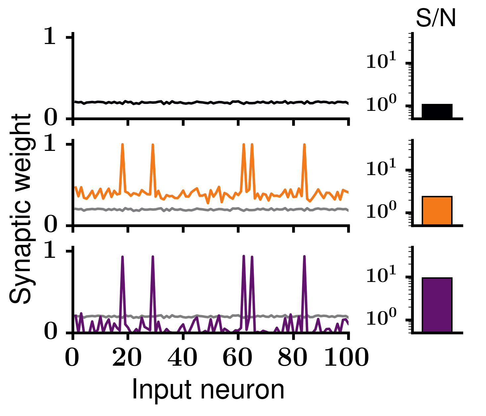
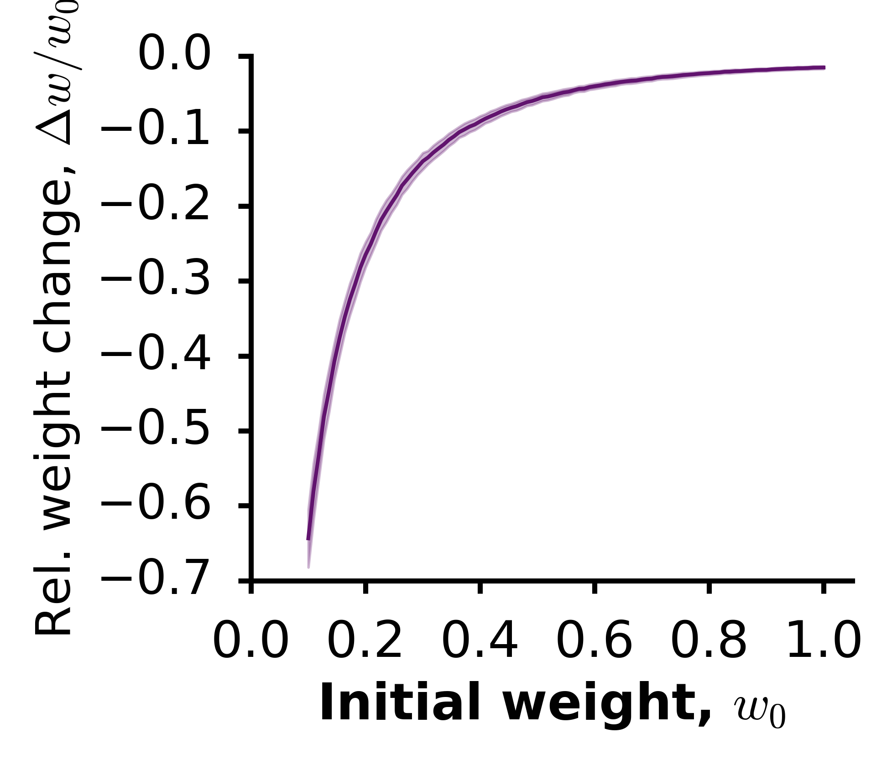

Activity-dependent downscaling of subthreshold synaptic inputs during slow wave sleep-like activity in vivo
Ana Gonzalez-Rueda, Victor Pedrosa, Rachael Feord, Claudia Clopath and Ole Paulsen
General description
Simulates a feedforward network of excitatory neurons as in: [1] González-Rueda, A., Pedrosa, V., Feord, R., Clopath, C., Paulsen, O. Activity-dependent downscaling of subthreshold synaptic inputs during slow wave sleep-like activity in vivo. Neuron (2018). Code written by: Victor Pedrosa v.pedrosa15@imperial.ac.uk Imperial College London, London, UK - Dec 2017Figure 4CD
List of files
(1) run_code.py This file runs all the code in steps 1,2 and 3, generating the data in 'Data/' and the figures in 'Figures/'. (2) Step1-wake_learning/UP-state-mediated_plast_fig4CD_wake.py Simulates a feedforward network of integrate-and-fire neurons with plastic excitatory synapses. The synapses are updated following a standard STDP rule and some neurons receive 50% stronger currents than the others. This code uses functions and parameters in SimStep.py and params.py. (3) Step2-sleep_learning/UP-state-mediated_plast_fig4CD_sleep.py Simulates a feedforward network of integrate-and-fire neurons with plastic excitatory synapses. Synaptic weights are initiated as the final weights from (1). Those weights are updated followin the Up-state-mediated plasticity described in [1]. This code uses functions and parameters in SimStep.py and params.py. (4) Step3-figures/Make_fig4CD.py Plots and save the figure generated with the data produced from (1) and (2). Figures are saved in Figures/.To simulate the network and plot the figures
1. run (1): simulates the network, saves the results and generate figure 4CD (below); Figure 4E
List of files
(1) run_code.py This file runs UP-state-mediated_plast_fig4E for 200 trials, which creates all the data in Data/ (2) UP-state-mediated_plast_fig4E.py Simulates the network and saves the data in Data/ (3) Make_fig4E.py Gets the data in Data/ as input, generate the figure and save it in Figures/ (4) SimStep.py Functions to be used in each integration time step. These fundtions are called from (2) (5) params.py Parameters used by (2)To simulate the network and plot the figures
1. run (1): simulates the network, saves the results and generate figure 4E (below); 